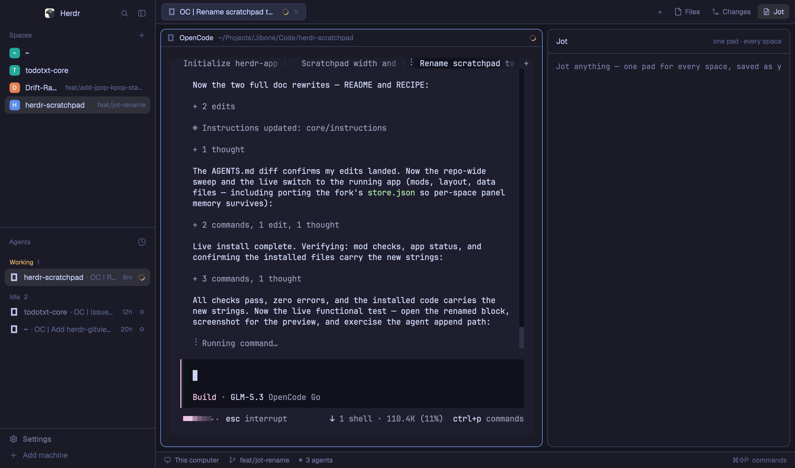

A "Jot" pill in Herdr's tab bar opens a free-text pane beside your terminals. The same notes in every space, saved as you type to one plain text file — and your coding agents can read and write it.
